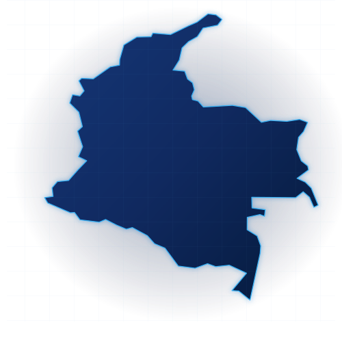

Bienestar
al alcance
de todos.
Dos momentos de consumo. Un universo de personas, hábitos y afinidades para conectar el bienestar con la vida cotidiana.
24 millones de personas en Colombia
24 millones de personas en la base nacional de planeación, distribuida por edades y compartida entre Día y Noche.
Proyección de población 2027 y uso de internet 2025. El potencial digital es una estimación propia; la base de planeación es editable.
Hábitos y afinidades nacionales. Todos los géneros; zonas urbanas y rurales.
Un país. Muchas formas de vivir Ritual.
Explora clústeres e intereses nacionales desde los 18 años.

Todos los clústeres · Toda Colombia · 18+
24 millones, por edad.
Cinco franjas sin duplicaciones. Distribución proporcional al potencial digital estimado por edad para toda Colombia.
Cada etapa tiene su propio Ritual.
24 millones de personas organizadas en cinco franjas de edad, sin cruce entre ellas. Explora su peso y una propuesta de comunicación para cada momento de vida.
La edad organiza. Los hábitos conectan.
Los perfiles son ilustrativos y pueden coincidir entre sí. Alex se enfoca en 18–25; los otros perfiles atraviesan todas las edades adultas. No se suman al universo.
Perfiles ilustrativos · 143 señales de afinidad para conectar con sus rutinas.
Cada audiencia, su plataforma.
Una misma base para todos los medios: Colombia, 18+ y todos los géneros.
Explora cada perfil por plataforma. Alex tiene un enfoque específico de 18–25; revisa la guía de edad de cada medio.
Google y YouTube comparten señales de la matriz. Los porcentajes describen registros por perfil, no alcance medido.
Conexiones que se vuelven rituales.
Explora 143 señales por clúster, plataforma y momento de consumo. Aplican en toda Colombia, sin división por ciudades. Alex: 18–25; los otros perfiles: 18+.
Cómo segmentar por medioConvierte estas señales en una configuración de campaña.Ver guía
Categorías
Proyecta tu alcance con Ritual.
Ajusta la combinación de inversión entre Día + Noche y visualiza el alcance acumulado
y la frecuencia sobre 24 millones de personas. Intersección máxima: 10% de la audiencia menor.
El presupuesto, el universo y los CPM se comparten con Inversión por medio.
El alcance depende de esa inversión; el universo es la base potencial.
Distribuye la inversión entre ambos productos. La base total sigue siendo de 24 millones.


Porcentaje de la audiencia menor entre Día y Noche. Es un objetivo de planeación; debe validarse en campaña.
Personas únicas por ola de campaña · proyección.
Exposiciones por persona alcanzada · proyección.
Planea la inversión por medio.
Escenarios para toda Colombia, desde los 18 años. El universo de referencia es de 24 millones de personas.
Mix total: 100%. Los demás canales se ajustan al mover un porcentaje.
Compara tus escenarios.
| Escenario | Inversión | Alcance estimado | Frecuencia | Impresiones |
|---|